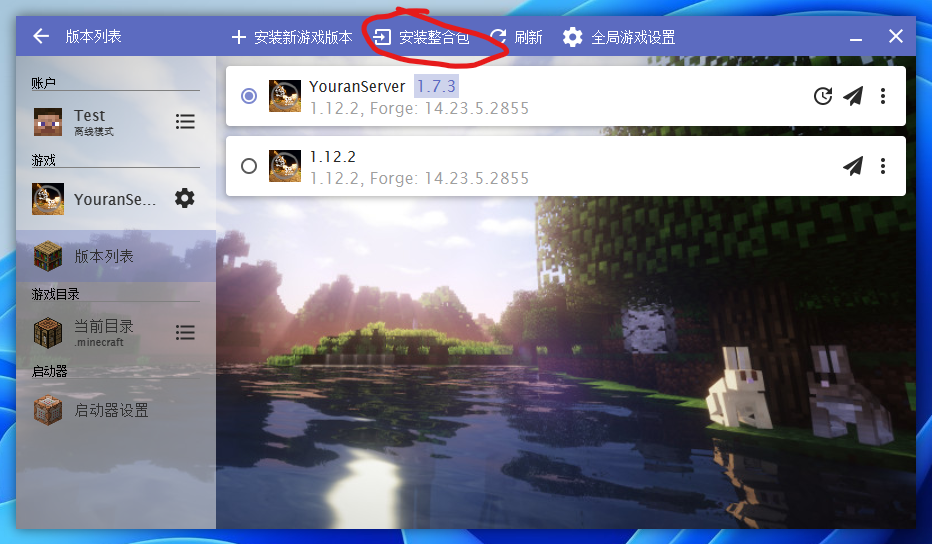
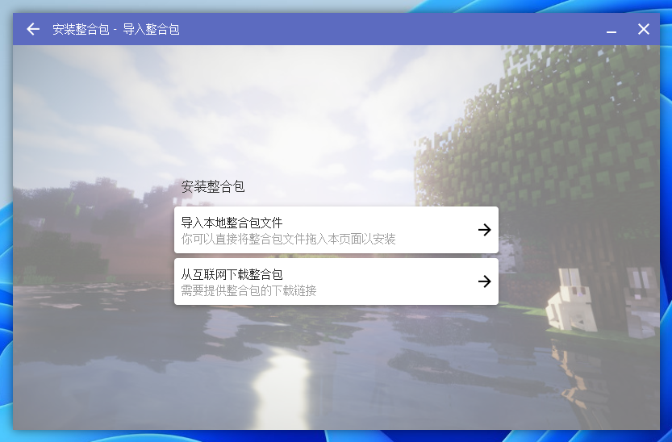

如果你想要游玩我们的服务器，请点击下方按钮直接下载客户端，或采用下面给出的其他下载方式。
另外，非常建议你去阅读服务器网页手册来了解我们服务器。（注；服务器网页手册基于Github，访问速度较慢）
其他下载方式
①微云网盘下载
②加入服务器QQ群下载
③百度网盘下载（不推荐）（提取码：yran）
你也可以点击此处浏览全部客户端版本（这有啥用）
安装
注意：我们服务器的整合包比较特殊，是专门使用HMCL启动器制作的服务器自动更新整合包，必须要使用HMCL启动器安装（所以如果你正在使用其他启动器，将会比较麻烦）。如果你使用的是Plain Craft Launcher 2或其他启动器，且怕麻烦的话，请试试我们自1.8.2版本开始尝试制作的MCBBS标准整合包。如果你要下载这个整合包，请点此下载，或前往服务器整合包版本列表获取更多下载方式。
①
打开你的HMCL（Hello Minecraft! Launcher）启动器。如果你在使用网易我的世界启动器或其他启动器（如Plain Craft Launcher 2），请前往HMCL官网下载，或点击此处查看Minecraft Java游玩教程。
②
点击左侧的版本列表，在“版本列表”界面的上面一栏中找到“安装整合包”

③
在安装整合包界面，你可以将已经下载的整合包文件导入到启动器中（直接拖入最简单了），也可以采用从互联网下载整合包的方式，填入“https://c13class-1305965891.cos-website.ap-shanghai.myqcloud.com/youran/server-manifest.json”也可以安装。

④
在弹出的界面中，确认整合包信息，然后点击安装即可

当弹出“安装成功”时，整合包就安装成功了！

获取白名单
加入服务器QQ群：953168624，申请白名单！
服务器地址
我们服务器的地址是：server.youranserver.top，欢迎游玩！。另外，点击这里可以前往服务器网页手册。（注；服务器网页手册基于Github，访问速度较慢）
更新
我们服务器会常常不定期更新整合包。
虽然我们这个整合包是服务器自动更新版，启动时会自动检查是否有更新并自动下载，但如果你发现无法自动更新，你就需要参照下面的教程手动更新。
①
点击左侧的版本列表，在弹出的界面中找到已经安装的整合包

②
点击整合包右侧的时钟状更新按钮，在弹出的界面中将新版整合包文件拖入

③
点击安装即可